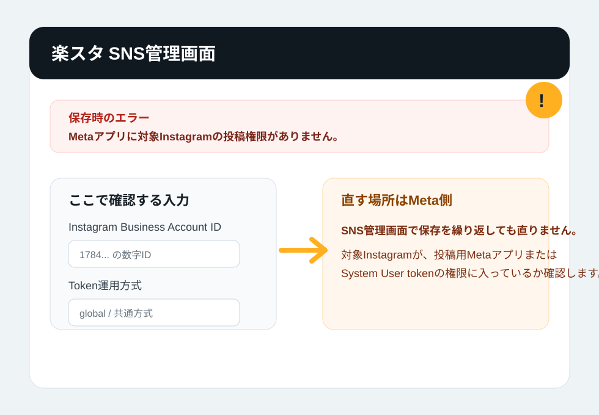
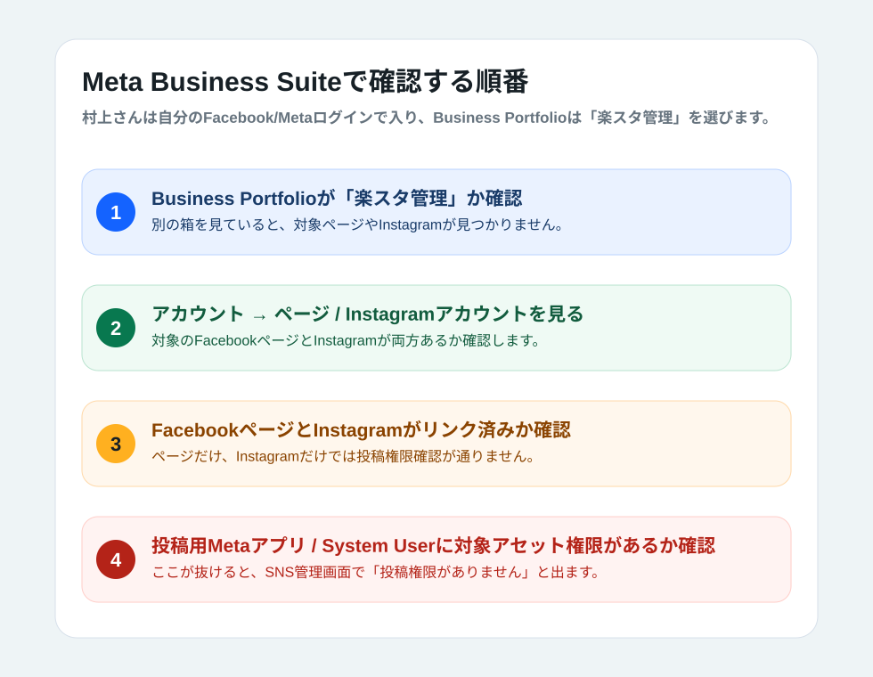
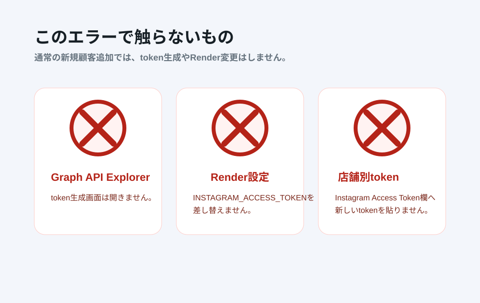

結論: 新規顧客はこのページではなく Instagram Login方式 を使います。このページは、既存のFacebook＆Instagram連携方式を維持している店舗だけで参照します。
0. 今回変わったところ
新規顧客の標準はInstagram Login方式です。このページは旧方式を残す店舗のエラー診断用です。
| 変わったこと | 村上さんの動き |
|---|---|
| 新規顧客の標準 | Facebookページなしの Instagramのみ連携。詳細は Instagram Login方式 を見る。 |
| このページの対象 | 既存104/105など、旧Facebook＆Instagram連携方式を残す店舗のエラー確認。 |
アプリ 欄は通常作業では使わない | 新方式では顧客InstagramのOAuth許可を使う。旧方式診断でもGraph API ExplorerやRenderは通常触らない。 |
| tokenやRenderは触らない | Graph API Explorer、BANTEX投稿Bot、System User、Instagram Access Token欄は触らない。 |
村上さんに伝える要点: 「新規顧客はInstagram Login方式を見る。ここは旧方式店舗のエラー確認用。」
1. エラーの意味
対象Instagramを投稿できる権限が、楽スタの投稿用Metaアプリ側に入っていない状態です。

画面に出る場所楽スタ SNS管理画面
原因になりやすい場所Meta Business Suite
やってはいけない対応tokenやRenderを急に変更
Instagram Access Token欄へ新しいtokenを貼る対応ではありません。通常は
Token運用方式 = global、Instagram Access Token欄は空欄のまま確認します。2. SNS管理画面で確認すること
まず入力値が間違っていないかだけ確認します。
| 項目 | 見ること | OKの状態 |
|---|---|---|
| Instagram Business Account ID | Instagramのユーザー名ではなく、1784... で始まる数字IDか | 対象店舗のInstagram Business Account IDになっている |
| Instagramユーザー名 | @ なし、または表記ゆれがないか | 対象店舗のInstagram名と一致 |
| Facebook Page ID | 対象店舗のFacebookページIDか | 別店舗や個人プロフィールではない |
| Token運用方式 | global / 共通方式になっているか | 店舗別tokenではない |
| Instagram Access Token | 店舗別tokenを貼っていないか | 空欄 |
ここが正しいのに同じエラーが出る場合は、SNS管理画面ではなくMeta側の権限確認へ進みます。
3. Meta側で直す場所
村上さん本人のFacebook/Metaログインで入り、Business Portfolioは「楽スタ管理」を選びます。

- Meta Business SuiteまたはBusiness設定で、Business Portfolioが
楽スタ管理になっているか確認します。 アカウント→ページに、対象店舗のFacebookページがあるか確認します。アカウント→Instagramアカウントに、対象店舗のInstagramがあるか確認します。- 対象Facebookページと対象Instagramがリンク済みか確認します。
- 通常の新規店舗追加では、Metaの
アプリ欄、投稿用Metaアプリ、System Userは見ません。
既存の
iryoukaigotest や rakusuta2000 のページ/Instagram選択を外さないでください。既存店舗が投稿できなくなる可能性があります。4. 「アプリが追加されていません」と出た場合
通常の新規店舗追加では見ない画面です。ページとInstagramの追加画面へ戻ります。
FacebookページとInstagramのリンク確認中に、ビジネス設定の
アプリ 欄で アプリが追加されていません と出ても、通常の新規店舗追加ではそこで作業しません。村上さんが毎回行うのは、対象店舗のFacebookページとInstagramを 楽スタ管理 の アカウント に追加し、IDを楽スタSNS管理画面へ登録することです。投稿用MetaアプリやSystem Userは裏側の共通設定であり、新店舗ごとに作り直したり確認したりしません。
| 状態 | 次にすること |
|---|---|
アプリ 欄に アプリが追加されていません と出た | その画面を閉じる。アカウント → ページ / Instagramアカウント へ戻る。 |
ページ/Instagramが 楽スタ管理 にない | 村上さんが追加・承認する。これは新店舗ごとに毎回行う。 |
| ページ/Instagramがある | Instagram Business Account IDとFacebook Page IDを控えて、楽スタSNS管理画面に登録する。 |
「アプリが追加されていません」と出たからといって、村上さんが任意のアプリを追加したり、Graph API Explorerでtokenを作ったりする対応ではありません。
5. 触らないもの
このエラーで焦って触ると、既存店舗へ影響が出やすい場所です。

- Graph API Explorerのtoken生成画面を開かない。
- Renderの
INSTAGRAM_ACCESS_TOKENを変更しない。 - Instagram Access Token欄へ店舗別tokenを貼らない。
- 既存店舗のFacebookページやInstagram権限を外さない。
6. 止めて確認する条件
ここに当てはまる場合は、その場で作業を止めて確認します。
| 止める状態 | 理由 |
|---|---|
楽スタ管理 に対象ページ/Instagramが見えない | 投稿権限以前に、Meta側の資産追加が完了していない可能性があります。 |
| FacebookページとInstagramのリンクが確認できない | Instagram投稿APIはページ連携が前提です。 |
ビジネス設定の「アプリ」欄に アプリが追加されていません と出る | 通常作業では見ない画面です。アカウント → ページ / Instagramアカウント へ戻ります。 |
| 投稿用アプリ/System Userの権限画面を開きそうになる | 通常の新店舗追加では触りません。既存店舗の投稿を止める可能性があります。 |
| Graph API ExplorerやRender変更が必要そうに見える | 通常の新規顧客追加ではなく、本番token切替作業として別扱いにします。 |
分からない場合は、対象店舗名、Instagramユーザー名、Facebookページ名、出たエラー文を控えて、そこで止めてください。
7. そのまま送れる回答文
村上さんへ説明する時の短い文面です。
このエラーは、SNS管理画面の保存項目だけで直すものではなく、Meta側で対象Instagramの投稿権限が足りない時に出ます。 まずSNS管理画面では、Instagram Business Account ID、Facebook Page ID、Token運用方式が global になっているかだけ確認してください。 Instagram Access Token欄には何も貼らないでください。 次にMeta Business Suiteで「楽スタ管理」を選び、アカウント → ページ と アカウント → Instagramアカウント に対象店舗が入っているか、ページとInstagramがリンク済みかを確認します。 Graph API Explorer、Render、既存共通tokenは触らないでください。 分からない場合は、対象店舗名・Instagramユーザー名・Facebookページ名・表示されたエラー文を控えて止めてください。
今回の「アプリが追加されていません」への返信例
ご確認ありがとうございます。 FacebookページとInstagramのリンクが連動済みで、ビジネス設定の「アプリ」欄に「アプリが追加されていません」と出ている場合、その画面は通常の新規店舗追加では使いません。 いったん「アプリ」欄は閉じて、楽スタ管理の「アカウント」→「ページ」と「Instagramアカウント」に戻ってください。 そこで対象店舗のFacebookページとInstagramが追加済みかを確認し、なければ追加してください。 その後、Instagram Business Account IDとFacebook Page IDを楽スタSNS管理画面に登録します。 Graph API Explorer、Render、Instagram Access Token欄は触らないでください。 対象店舗名、Instagramユーザー名、Facebookページ名、表示されたエラー文だけ控えておいてください。 登録後にまだ投稿権限エラーが出る場合だけ、こちらで共通設定を確認します。